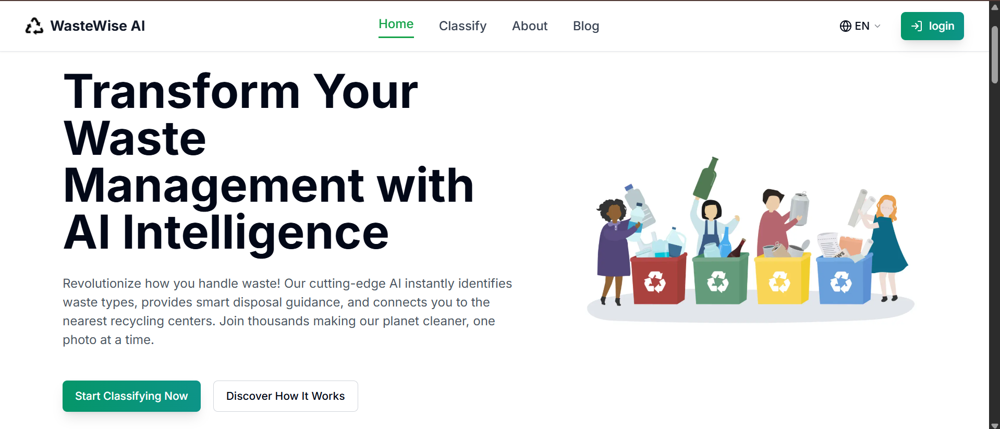
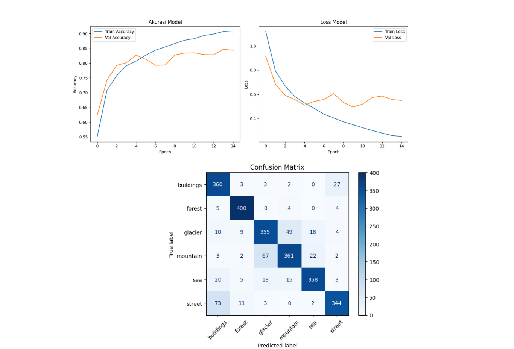
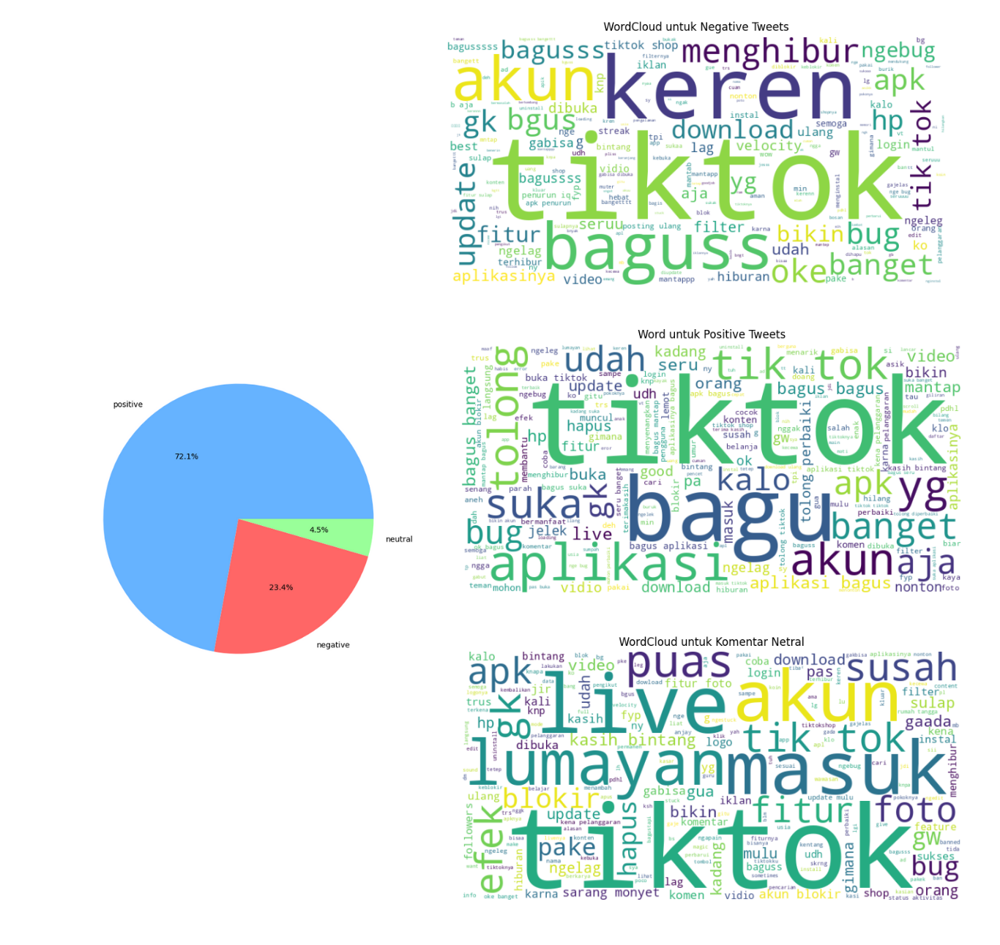
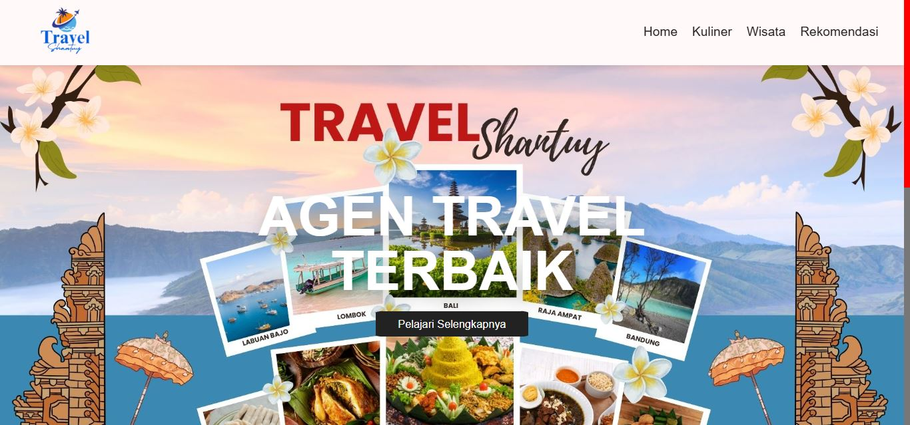

All Projects

💰 Financial & Sales Performance Dashboard
An interactive financial and sales dashboard designed to analyze revenue, profitability, customer segments, product performance, and sales trends. Transforms raw transaction data into executive-level insights.
View Details
📱 Halalergy Application
An Android-based application that analyzes food product labels to identify potential allergens and halal-related ingredients using OCR, NLP, fuzzy matching, and a structured knowledge base.
View Details
🍽️ Restaurant Management Website for Client “Ibu Tami”
A client-based software project designed to digitalize restaurant operations. Focused on analyzing business processes, gathering requirements, and designing system structures for the development team.
View Details
🧴 Smart Skincare Application
A CNN-based Machine Learning application that classifies facial skin problems and recommends skincare products using content-based filtering.
View Details
🌱 WasteWise AI
Collaborative capstone project developing a MobileNetV2-based CNN model to classify waste into 3 main categories and 15 subcategories with 87.68% validation accuracy, integrated into a web application.
View Details
🎥 Movie Recommendation System
Developed a hybrid movie recommendation system leveraging MovieLens data, combining SVD collaborative filtering and metadata-driven content similarity with rigorous ranking evaluations.
View Details
🩺 Diabetes Prediction
Built robust classification models (Random Forest, XGBoost, and Logistic Regression) on 100k medical records to predict diabetes risk, achieving up to 97.76% test accuracy and identifying critical health indicators.
View Details
🖼️ Image Classification Using Convolutional Neural Network (CNN)
Engineered a custom CNN architecture to classify natural scenes into 6 categories with 85.01% test accuracy, complete with evaluation metrics and conversion to TF-Lite and TensorFlow.js formats.Engineered a custom CNN architecture to classify natural scenes into 6 categories with 85.01% test accuracy, complete with evaluation metrics and conversion to TF-Lite and TensorFlow.js formats.
View Details
💬 Sentiment Analysis of TikTok Reviews Using Lexicon-Based and Machine Learning
Analyzed 10,000 Indonesian TikTok reviews using custom slang mapping, Sastrawi stemming, TF-IDF vectorization, and SVM classification, achieving 90.80% test accuracy.
View Details
🚴 Bike Sharing Using Exploratory Data Analysis (EDA)
Analyzed hourly and daily bike sharing records to uncover commuter peaks, user behaviors, and seasonal trends using Pandas, Seaborn, and Matplotlib.
View Details
Travel Shantuy
Built an interactive website showcasing the best tourist destinations, culinary delights, and recommendations. On this project, I was responsible for the UI design and implementation of the website interface.
View Details